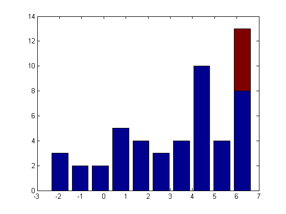

This demo shows some advanced examples of using the Statistics Toolbox function MLE to fit custom distributions to univariate data. These examples include fitting models to censored data, and illustration of some of the numerical details of fitting with custom distributions. The Fitting Custom Univariate Distributions demo covers other examples.
The extreme value distribution is often used to model failure times of mechanical parts, and experiments in such cases are sometimes only run for a fixed length of time. If not all of the experimental units have failed within that time, then the data are right-censored, that is, the value of some failure times are not known exactly, but only known to be larger than a certain value.
The Statistics Toolbox includes the function EVFIT, which fits an extreme value distribution to data, including data with censoring. However, for the purposes of this example, we will ignore EVFIT, and demonstrate how to use MLE and custom distributions to fit a model to censored data, using the extreme value distribution.
Because the values for the censored data are not known exactly, maximum likelihood estimation becomes more difficult. In particular, both the PDF and the CDF are needed to compute the log-likelihood. Therefore, you must provide MLE with functions for both of those in order to fit censored data. The Statistics Toolbox includes the functions EVPDF and EVCDF, so for this example, the work of writing the code has already been done.
We'll fit the model to simulated data. The first step is to generate some uncensored extreme value data.
rand('state',0); randn('state',0); n = 50; mu = 5; sigma = 2.5; x = evrnd(mu,sigma,n,1);
Next, we censor any values that are larger than a predetermined cutoff, by replacing those values with the cutoff value. This is known as Type II censoring, and with the cutoff at 7, about 10% of the original data end up being censored.
c = (x > 7); x(c) = 7; sum(c)/length(c)
ans =
0.1000
We can plot a histogram of these data, including a stacked bar to represent the censored observations.
[uncensCnts,binCtrs] = hist(x(~c));
censCnts = hist(x(c),binCtrs);
bar(binCtrs,[uncensCnts' censCnts'],'stacked');
 Although there is censoring, the fraction of censored observations is relatively small, and so the method of moments can provide a reasonable starting point for the parameter estimates. We compute the values of mu and sigma that correspond to the observed mean and standard deviation of the uncensored data.
sigma0 = sqrt(6)*std(x(~c))./pi mu0 = mean(x(~c))-psi(1).*sigma0
sigma0 =
2.0109
mu0 =
4.2485
In addition to passing the data, x, and handles to the PDF and CDF functions into MLE, we also use the 'censoring' parameter to pass in the censoring vector, c. Because the scale parameter, sigma, must be positive, we specify lower parameter bounds. MLE returns the maximum likelihood estimates of the two extreme value distribution parameters, mu and sigma, as well as approximate 95% confidence intervals.
[paramEsts,paramCIs] = mle(x, 'censoring',c, 'pdf',@evpdf, 'cdf',@evcdf, ... 'start',[mu0 sigma0], 'lower',[-Inf,0])
paramEsts =
4.9001 2.4051
paramCIs =
4.1831 1.8270
5.6171 2.9831
Fitting a custom distribution requires an initial guess for the parameters, and it's often difficult to know how good or bad a starting point is a priori. In the previous example, if we had picked a starting point that was farther away from the maximum likelihood estimates, some of the observations could have been very far out in the tails of the extreme value distribution corresponding to the starting point. One of two things might then have happened.
First, one of the PDF values might have become so small that it underflowed to zero in double precision arithmetic. Second, one of the CDF values might have become so close to 1 that it rounded up in double precision. (It's also possible that a CDF value might have become so small as to underflow, but that turns out not to be a problem.)
Either of these conditions causes problems when MLE computes the log-likelihood, because they lead to log-likelihood values of -Inf, and the optimization algorithm in MLE can not normally be expected to step out of such regions.
Knowing what the maximum likelihood estimates are, let's see what happens with a different starting point.
start = [1 1]; try [paramEsts,paramCIs] = mle(x, 'censoring',c, 'pdf',@evpdf, 'cdf',@evcdf, ... 'start',start, 'lower',[-Inf,0]) catch disp(lasterr) end
Error using ==> stats\private\mlecustom>llf_pdfcdf The CDF function returned values greater than or equal to 1.
In this case, the second problem has occurred: Some of the CDF values at the initial parameter guess are computed as exactly 1, and so the log-likelihood is infinite. We could try setting MLE's 'FunValCheck' control parameter to 'off', which would disable checking for non-finite likelihood values, and then hope for the best. But the right way to solve this numerical problem is at its root, and in this case it's not hard to do.
Notice that the extreme value CDF is of the form
p = 1 - exp( -exp((x-mu)./sigma) )
The contribution of the censored observations to the log-likelihood is the log of their survival function (SF) values, i.e., log(1-CDF). For the extreme value distribution, the log of the SF is just -exp((x-mu)./sigma). If we could compute the log-likelihood using the log SF directly, (instead of, in effect, computing log(1 - (1-exp(logSF)))) we would avoid the rounding issues with the CDF. That's because observations whose CDF values are not distinguishable from 1 in double precision have log SF values that are still easily representable as non-zero values. For example, a CDF value of (1 - 1e-20) rounds to 1 in double precision, because double precision eps is about 2e-16.
SFval = 1e-20; CDFval = 1 - SFval
CDFval =
1
However, the log of the corresponding SF value, i.e. log(1-CDF), is easily represented.
log(SFval)
ans = -46.0517
A similar observation can be made about using the log PDF rather than the PDF itself -- the contribution of uncensored observations to the log-likelihood is the log of their PDF values. Using the log PDF directly (instead of, in effect, computing log(exp(logPDF))) avoids underflow problems where the PDF is not distinguishable from zero in double precision, but the log PDF is still easily representable as a finite negative number. For example, a PDF value of 1e-400 underflows in double precision, because double precision realmin is about 2e-308.
logPDFval = -921; PDFval = exp(logPDFval)
PDFval =
0
MLE provides a syntax for specifying a custom distribution using the log PDF and the log SF (rather than the PDF and CDF), via the 'logpdf' and 'logsf' parameters. Unlike the PDF and CDF functions, there are no existing functions, so we'll create anonymous functions that compute these values:
evlogpdf = @(x,mu,sigma) ((x - mu) ./ sigma - exp((x - mu) ./ sigma)) - log(sigma); evlogsf = @(x,mu,sigma) -exp((x-mu)./sigma);
Using the same starting point, the alternate logPDF/logSF specification of the extreme value distribution makes the problem solvable:
start = [1 1]; [paramEsts,paramCIs] = mle(x, 'censoring',c, 'logpdf',evlogpdf, 'logsf',evlogsf, ... 'start',start, 'lower',[-Inf,0])
paramEsts =
4.9001 2.4051
paramCIs =
4.1831 1.8270
5.6171 2.9831
However, this strategy cannot always mitigate a poor starting point, and a careful choice of starting point is always recommended.
By default, MLE uses the function FMINSEARCH to find parameter values that maximize the log-likelihood for the data. FMINSEARCH uses an optimization algorithm that is derivative-free, and is often a good choice.
However, for some problems, choosing an optimization algorithm that uses the derivatives of the log-likelihood function can make the difference between converging to the maximum likelihood estimates or not, especially when the starting point is far away from the final answer. Providing the derivatives can also sometimes speed up the convergence.
If your MATLAB installation includes the Optimization Toolbox, MLE allows you to use the function FMINCON, which includes optimization algorithms that can use derivative information. To take best advantage of the algorithms in FMINCON, you can specify a custom distribution using a log-likelihood function, written to return not only the log-likelihood itself, but its gradient as well. The gradient of the log-likelihood function is simply the vector of its partial derivatives with respect to its parameters.
This strategy requires extra preparation, to write code that computes both the log-likelihood and its gradient. For this example, we've the created code to do that for the extreme value distribution as a separate M-file evnegloglike.m.
type evnegloglike.m
function [nll,ngrad] = evnegloglike(params,x,cens,freq)
%EVNEGLOGLIKE Negative log-likelihood for the extreme value distribution.
%
% Copyright 1984-2004 The MathWorks, Inc.
% $Revision: 1.1.4.1 $ $Date: 2004/03/22 23:55:02 $
mu = params(1);
sigma = params(2);
nunc = sum(1-cens);
z = (x - mu) ./ sigma;
expz = exp(z);
nll = sum(expz) - sum(z(~cens)) + nunc.*log(sigma);
if nargout > 1
ngrad = [-sum(expz)./sigma + nunc./sigma, ...
-sum(z.*expz)./sigma + sum(z(~cens))./sigma + nunc./sigma];
end
Notice that the function EVNEGLOGLIKE returns the _negative_ of both the log-likehood values and of the gradient values, because MLE _minimizes_ that negative log-likelihood.
To compute the maximum likelihood estimates using a gradient-based optimization algorithm, we use the 'nloglf' parameter, specifying that we are providing a handle to a function that computes the negative log-likelihood, and the 'optimfun' parameter, specifying FMINCON as the optimization function. MLE will automatically detect that EVNEGLOGLIKE can return both the negative log-likelihood and its gradient.
start = [1 1]; [paramEsts,paramCIs] = mle(x, 'censoring',c, 'nloglf',@evnegloglike, ... 'start',start, 'lower',[-Inf,0], 'optimfun','fmincon')
paramEsts =
4.9001 2.4051
paramCIs =
4.1831 1.8270
5.6171 2.9831